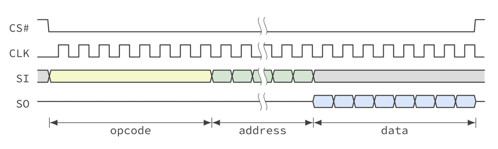
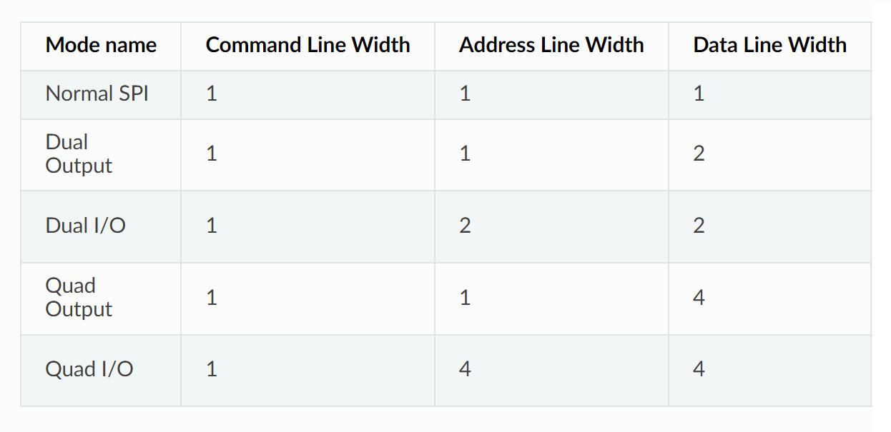
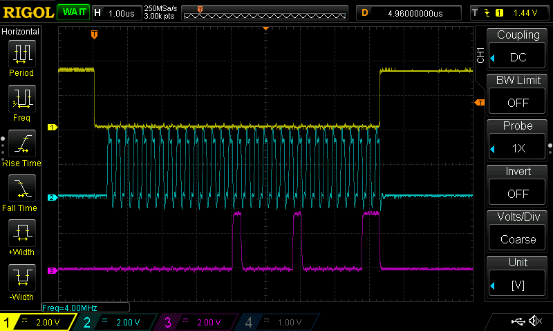
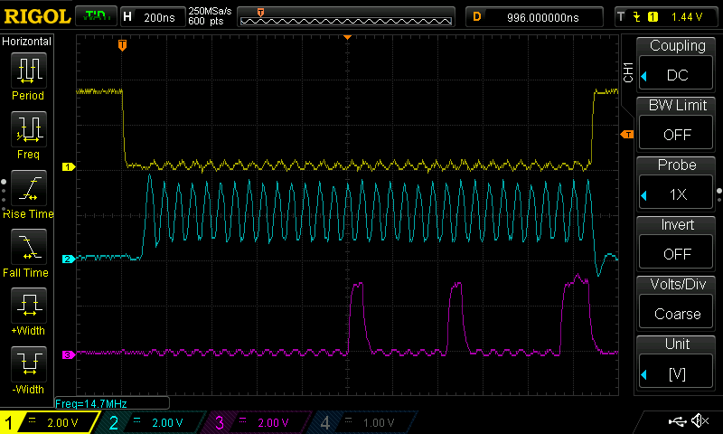
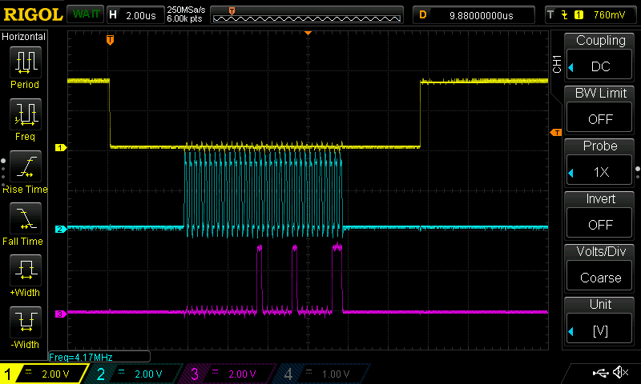

การใช้งาน SPI และการเขียนโปรแกรม Arduino สำหรับ ESP32#
▷ SPI Bus#
ไมโครคอนโทรลเลอร์อย่างเช่น ESP32 มีขา GPIO สำหรับการใช้งานบัส SPI (Serial Peripheral Interface) และมีวงจรภายใน SPI Controller จำนวน 4 ชุด ได้แก่ SPI0 / SPI1 เป็นสองชุดแรกแต่จะใช้ในการเขียนอ่านข้อมูลในหน่วยความจำ SPI Flash / PSRAM อีกสองชุดคือ HSPI (SPI2) และ VSPI (SPI3) ใช้ได้สำหรับวัตถุประสงค์ทั่วไป
โดยทั่วไปแล้ว ก็จะให้ ESP32 ทำหน้าที่เป็น SPI Master หรือ SPI Controller หรือตัวกำหนดจังหวะการสื่อสารข้อมูลกับอุปกรณ์อื่น ซึ่งอีกฝ่ายหนึ่งเรียกว่า SPI Slave หรือ SPI Peripheral
Standard SPI (Normal) ใช้สัญญาณ 4 เส้น (ใช้งานตามรูปแบบที่เรียกว่า 4-Wire SPI) ได้แก่
- SCK (Serial Clock) — เป็นสัญญาณ CLK ที่ถูกสร้างโดยอุปกรณ์ที่เป็น SPI Master
- MOSI (Master-Out, Slave-In) หรือ COPI (Controller-Out, Peripheral-In) — เป็นสัญญาณสำหรับส่งข้อมูลบิตออกจาก SPI Master ไปยัง SPI Slave
- MISO (Master-In, Slave-Out) หรือ หรือ CIPO (Controller-In, Peripheral-Out) — เป็นสัญญาณสำหรับส่งข้อมูลบิตออกจาก SPI Slave ไปยัง SPI Master
- SS (Slave Select) หรือ CS (Chip Select)
— เป็นสัญญาณที่สร้างโดย SPI Master และทำงานแบบ Active-Low
(เช่น มีสัญลักษณ์
#เขียนกำกับไว้ข้างหน้าหรือหลังชื่อสัญญาณ) เพื่อใช้ระบุว่า ต้องการสื่อสารกับ SPI Slave หรือไม่

รูป: ตัวอย่างการสื่อสารข้อมูลสำหรับชิปหน่วยความจำด้วย Standard SPI Transaction
วงจร SPI Controller ของ ESP32 รองรับการสื่อสารด้วยบัส SPI และมีขา I/O ที่เกี่ยวข้อง รวมทั้งหมด 6 ขา ได้แก่
- CS#
- SCK
- MOSI / D0
- MISO / D1
- WP# / D2
- HOLD# / D3
และมีการแบ่งโหมดของ SPI Controller ให้เลือกใช้งานได้ดังนี้
- Standard SPI (4-Wire)
- Dual SPI / Dual Output
- Dual I/O (DIO)
- Quad SPI / Quad Output
- Quad I/O (QIO)
ในกรณีที่ใช้ชิปประเภทหน่วยความจำ เช่น QSPI NOR Flash การสื่อสารด้วยบัส SPI ในแต่ละครั้ง จะต้องมีการส่งคำสั่ง (Command หรือ Opcode Bits) ตามด้วยแอดเดรส (Address Bits) และข้อมูล (Data Bits) ตามลำดับ โหมดการทำงานของ SPI จึงมีให้เลือกใช้แตกต่างกันตามจำนวนของขาสัญญาณที่ใช้สำหรับการกำหนดค่าแอดเดรสและข้อมูล (Single vs. Multiple Address Lines & Data Lines) เช่น 2 ขา (Dual) หรือ 4 ขา (Quad)

ตาราง: โหมดการใช้งาน SPI Controller ของ ESP32 สำหรับการสื่อสารกับชิปหน่วยความจำ SPI Flash
ขา GPIO ที่เหมาะสมสำหรับการใช้งานบัส HSPI ของ ESP32 ได้แก่
- HSPI-CS = GPIO 15
- HSPI-SCK = GPIO 14
- HSPI-MOSI = GPIO 13
- HSPI-MISO = GPIO 12
- HSPI-QUADWP = GPIO 2
- HSPI-QUADHD = GPIO 4
ขา GPIO ที่เหมาะสมสำหรับการใช้งานบัส VSPI ของ ESP32 ได้แก่
- VSPI-CS = GPIO 5
- VSPI-SCK = GPIO 18
- VSPI-MOSI = GPIO 23
- VSPI-MISO = GPIO 19
- VSPI-QUADWP = GPIO 22
- VSPI-QUADHD = GPIO 21
บริษัท Espressif ได้จัดทำ API ซึ่งเป็นส่วนหนึ่งของ ESP-IDF เพื่อใช้ในการเขียนโปรแกรม C/C++ สำหรับ HSPI และ VSPI โดยแบ่งเป็น 2 ลักษณะการใช้งานได้แก่
หากต้องการเขียนโปรแกรมด้วย Arduino-ESP32
เพื่อใช้งาน HSPI หรือ VSPI และทำหน้าที่เป็น SPI Controller
ก็มีไลบรารีที่มีชื่อว่า SPI
ประกอบด้วยสองไฟล์ที่สำคัญคือ
SPI.h และ
SPI.cpp
ในไฟล์ดังกล่าวมีการสร้างคลาส C++ ที่มีชื่อว่า SPIClass เอาไว้ใช้งาน
และมีการประกาศตัวแปรภายนอกจากคลาสดังกล่าวและมีชื่อว่า SPI ไว้ให้แล้วสำหรับการใช้งาน VSPI (หรือจะสร้างตัวแปรใหม่ก็ได้)
มีการกำหนดค่าเริ่มต้น (default) สำหรับการใช้งาน เช่น
ความถี่ของ SPI SCLK เท่ากับ 1MHz ทำงานในโหมด 0 (SPI Mode 0)
และส่งข้อมูลตามลำดับบิตแบบ MSB First

รูป: ตัวอย่างโค้ดบางส่วนจากไฟล์ SPI.h
ในไฟล์ SPI.h
จะเห็นได้ว่า มีคำสั่งต่าง ๆ หรือเมธอดของคลาส SPIClass เช่น
void begin( int8_t sck, int8_t miso, int8_t mosi, int8_t ss )เริ่มต้นใช้งาน SPI Controller โดยระบุขาที่จะใช้งานสำหรับ SPI Controllervoid end()จบการใช้งาน SPI Controller และขา GPIO ที่เกี่ยวข้องvoid setHwCs( bool use )ตั้งค่าการใช้งานขา Chip Select (CS) ของ SPI Controller ที่เกี่ยวข้อง ถ้ากำหนดค่าเป็นfalseจะต้องเลือกใช้ขา GPIO ให้เป็นขาเอาต์พุต โดยผู้ใช้เอง และกำหนดค่าลอจิกของขาดังกล่าวให้เป็น LOW ก่อนส่งข้อมูลด้วย SPI ทุกครั้ง แต่ถ้าเป็นtrueการทำงานของขา CS จะถูกควบคุมโดย SPI Controller โดยอัตโนมัติvoid setBitOrder( uint8_t bitOrder )เลือกลำดับการส่งข้อมูล MSB First หรือ LSB First อย่างใดอย่างหนึ่งvoid setDataMode( uint8_t dataMode )เลือกโหมดการทำงานของ SPI ซึ่งมีให้เลือก 4 โหมด ได้แก่SPI_MODE0..SPI_MODE3void setFrequency( uint32_t freq )ตั้งค่าความถี่ของสัญญาณ SPI SCLKuint8_t transfer( uint8_t data )ส่งข้อมูลออกหนึ่งไบต์ และอ่านข้อมูลเข้ามาด้วยเช่นกัน (ได้เป็นค่ากลับคืนของฟังก์ชัน)uint16_t transfer16( uint16_t data )ส่งข้อมูลออก 2 ไบต์ และอ่านข้อมูลเข้ามาด้วยเช่นกัน (ได้เป็นค่ากลับคืนของฟังก์ชัน)uint32_t transfer32( uint32_t data )ส่งข้อมูลออก 4 ไบต์ และอ่านข้อมูลเข้ามาด้วยเช่นกัน (ได้เป็นค่ากลับคืนของฟังก์ชัน)void transferBytes( const uint8_t *data, uint8_t *out, uint32_t size )ส่งและรับข้อมูลหลายไบต์ โดยใช้ข้อมูลขาออกจากอาร์เรย์dataและเก็บข้อมูลขาเข้าที่รับได้ลงในอาร์เรย์outตามจำนวนที่ระบุโดยsizevoid write( uint8_t data )ส่งข้อมูลออกหนึ่งไบต์ (Write Only ไม่สนใจข้อมูลขาเข้า)void write16( uint16_t data )ส่งข้อมูลออก 2 ไบต์ (Write Only)void write32( uint32_t data )ส่งข้อมูลออก 4 ไบต์ Write Only)void writeBytes( const uint8_t *data, uint32_t size )ส่งข้อมูลออกหลายไบต์จากข้อมูลที่อยู่ในอาร์เรย์dataตามจำนวนที่ระบุโดยsize
▷ ตัวอย่างโค้ดสาธิตการใช้งาน SPI Controller#
ถัดไปเป็นตัวอย่างการเขียนโค้ด Arduino Sketch เพื่อสาธิตการใช้งาน HSPI หรือ VSPI อย่างใดอย่างหนึ่ง ให้ทำหน้าที่เป็น SPI Controller (Standard SPI)
ในตัวอย่างนี้ มีการสร้างตัวแปรชื่อ spidev จากคลาส SPIclass
ได้เลือกใช้ SPI Mode 0 และส่งข้อมูลแบบ MSB First
และได้กำหนดความถี่สำหรับ SCK ไว้เท่ากับ 4MHz เปรียบเทียบกับ 16MHz
เมื่อมีการสื่อสารด้วยบัส SPI สัญญาณ CS# จะเปลี่ยนจาก HIGH
เป็น LOW โดยอัตโนมัติ
ในการทดสอบการทำงานของโค้ดตัวอย่างนี้ จะต้องเชื่อมต่อขาสัญญาณ MOSI ไปยัง MISO
เพื่อรับข้อมูลที่ถูกส่งออกไปให้กลับเข้ามา (ส่งข้อมูล เช่น 4 ไบต์ต่อหนึ่งรอบ)
แล้วนำค่าที่อ่านได้มาแสดงผลเป็นข้อความทาง Serial
ดังนั้นจึงเป็นการทดสอบแบบ SPI Loopback
#include "SPI.h"
// Define the SPI clock frequency (Hz)
#define SPI_SPEED (16000000)
//#define USE_HSPI
#define USE_VSPI
#ifdef USE_HSPI
// Set the HSPI pins to use for the connection
#define HSPI_MOSI (13)
#define HSPI_MISO (12)
#define HSPI_SCK (14)
#define HSPI_CS (15)
// Global variable
SPIClass spidev(HSPI); // VSPI is SPI2.
#endif
#ifdef USE_VSPI
// Set the VSPI pins to use for the connection
#define VSPI_MOSI (23)
#define VSPI_MISO (19)
#define VSPI_SCK (18)
#define VSPI_CS (5)
// Global variable
SPIClass spidev(VSPI); // VSPI is SPI3.
#endif
#define BUFSIZE (4)
uint8_t wdata[BUFSIZE]; // Write data buffer
uint8_t rdata[BUFSIZE]; // Read data buffer
void setup() {
Serial.begin(115200);
Serial.println("ESP32 SPI Demo... ");
Serial.flush();
#ifdef USE_HSPI
// Initialize the HSPI interface.
spidev.begin(HSPI_SCK, HSPI_MISO, HSPI_MOSI, HSPI_CS);
#endif
#ifdef USE_VSPI
// Initialize the VSPI interface.
spidev.begin(VSPI_SCK, VSPI_MISO, VSPI_MOSI, VSPI_CS);
#endif
// Use the hardware SPI chip select pin
spidev.setHwCs(true);
// Set the SPI bit order to MSB first
spidev.setBitOrder(MSBFIRST);
// Set the SPI data mode to mode 0
spidev.setDataMode(SPI_MODE0);
// Set the SPI clock frequency
spidev.setFrequency(SPI_SPEED);
}
void loop() {
for ( int i=0; i < BUFSIZE; i++ ) {
wdata[i] = (uint8_t)i;
}
memset( rdata, 0xFF, BUFSIZE );
// Send / receive data bytes to the SPI bus
spidev.transferBytes( wdata, rdata, BUFSIZE );
// Show data bytes received from the SPI bus
for ( int i=0; i < BUFSIZE; i++ ) {
Serial.printf("%02X ", rdata[i] );
if ( i % 8 == 7 ) {
Serial.println();
}
}
Serial.println();
delay(1000);
}
ผลจากการทดสอบการทำงานของโค้ดตัวอย่าง โดยใช้บอร์ด Wemos Lolin32 Lite และการวัดสัญญาณ CS, SCLK และ MOSI (สัญญาณช่องที่ 1-3 ตามลำดับ) มีดังนี้

รูป: ตัวอย่างคลื่นสัญญาณที่วัดได้ด้วยออสซิลโลสโคป เมื่อใช้ความถี่ 4MHz สำหรับ SCLK

รูป: ตัวอย่างคลื่นสัญญาณที่วัดได้ด้วยออสซิลโลสโคป เมื่อใช้ความถี่สูงขึ้นเป็น 16MHz สำหรับ SCLK
จากรูปคลื่นสัญญาณจะเห็นได้ว่า การใช้ความถี่สูงขึ้นสำหรับ SCLK จะส่งผลต่อคุณภาพของสัญญาณที่ลดลง (และอาจทำให้เกิดความผิดพลาดในการส่งและรับข้อมูลได้)
การใช้คำสั่งหรือเมธอด transferBytes(...) ของตัวแปร spidev (คลาส SPIClass)
เป็นการส่งและรับข้อมูลหลายไบต์ในคำสั่งเดียวกัน โดยมี wdata เป็นอาร์เรย์สำหรับข้อมูลไบต์ที่จะถูกส่งออกไป
และมี rdata เป็นอาร์เรย์สำหรับเอาไว้เก็บข้อมูลไบต์ที่ได้รับเข้ามา ตามจำนวนไบต์หรือขนาดของอาร์เรย์ (BUFSIZE)
// Send data bytes to the SPI bus
spidev.transferBytes( wdata, rdata, BUFSIZE );
หรือจะลองใช้คำสั่ง SPISettings(...)
เพื่อกำหนดความถี่ของบัส ลำดับการส่งข้อมูลบิต และโหมดการทำงานของ SPI
ก่อนการส่งและรับข้อมูลในแต่ละครั้งด้วย (เรียกว่า SPI Transaction)
โดยจะต้องใช้ร่วมกับคำสั่ง beginTransaction(...) และ endTransaction()
สำหรับตัวแปร spidev
// Start SPI transaction
spidev.beginTransaction( SPISettings(SPI_SPEED, MSBFIRST, SPI_MODE0) );
// Send data bytes to the SPI bus
spidev.transferBytes( wdata, rdata, BUFSIZE );
// End SPI transaction
spidev.endTransaction();
▷ การกำหนดสถานะลอจิกของสัญญาณ Chip Select (CS)#
ตัวอย่างถัดไปสาธิตการเขียนโค้ด เพื่อส่งข้อมูลโดยใช้ VSPI
และมีการใช้คำสั่ง digitalWrite() เพื่อเปลี่ยนสถานะลอจิกของขา CS
จาก HIGH เป็น LOW (ไม่ได้เกิดขึ้นโดยอัตโนมัติ)
ก่อนการส่ง-รับข้อมูล แล้วเปลี่ยนกลับให้เป็น HIGH หลังจากจบการทำงาน
#include "SPI.h"
// Set the VSPI pins to use for the connection
#define VSPI_MOSI (23)
#define VSPI_MISO (19)
#define VSPI_SCK (18)
#define VSPI_CS (5)
#define SPI_SPEED (4000000)
// Create a global variable for the VSPI interface
SPIClass spidev(VSPI); // VSPI=3
#define BUFSIZE (4)
uint8_t wdata[BUFSIZE];
uint8_t rdata[BUFSIZE];
void setup() {
Serial.begin(115200);
Serial.println("ESP32 VSPI Demo... ");
Serial.flush();
// Initialize the SPI interface.
spidev.begin(VSPI_SCK, VSPI_MISO, VSPI_MOSI, VSPI_CS);
// Do not use the hardware SPI chip select pin
spidev.setHwCs(false);
// Set the SPI bit order to MSB first
spidev.setBitOrder(MSBFIRST);
// Set the SPI data mode to mode 0
spidev.setDataMode(SPI_MODE0);
// Set the SPI clock frequency
spidev.setFrequency(SPI_SPEED);
// Set the GPIO pin for user-defined SPI CS
pinMode( VSPI_CS, OUTPUT );
// Set the SPI CS pin to HIGH
digitalWrite( VSPI_CS, HIGH );
}
void loop() {
for ( int i=0; i < BUFSIZE; i++ ) {
wdata[i] = (uint8_t)i;
}
memset( rdata, 0xFF, BUFSIZE );
// Assert the VSPI_CS line (change to LOW)
digitalWrite( VSPI_CS, LOW );
// Send and receive data bytes
spidev.transferBytes( wdata, rdata, BUFSIZE );
// Deassert the VSPI_CS line (change to HIGH)
digitalWrite( VSPI_CS, HIGH );
// Show the received data bytes
for ( int i=0; i < BUFSIZE; i++ ) {
Serial.printf("%02X ", rdata[i] );
if ( i % 8 == 7 ) {
Serial.println();
}
}
Serial.println();
delay(1000);
}

รูป: ตัวอย่างรูปคลื่นสัญญาณที่ได้
▷ กล่าวสรุป#
บทความนี้ได้กล่าวถึง การใช้งานวงจร SPI Controller เช่น HSPI และ VSPI ของชิป ESP32 ในเบื้องต้น และตัวอย่างการเขียนโค้ด Arduino-ESP32 เพื่อใช้งานในโหมด Standard SPI
This work is licensed under a Creative Commons Attribution-ShareAlike 4.0 International License.
Created: 2022-12-26 | Last Updated: 2022-12-27